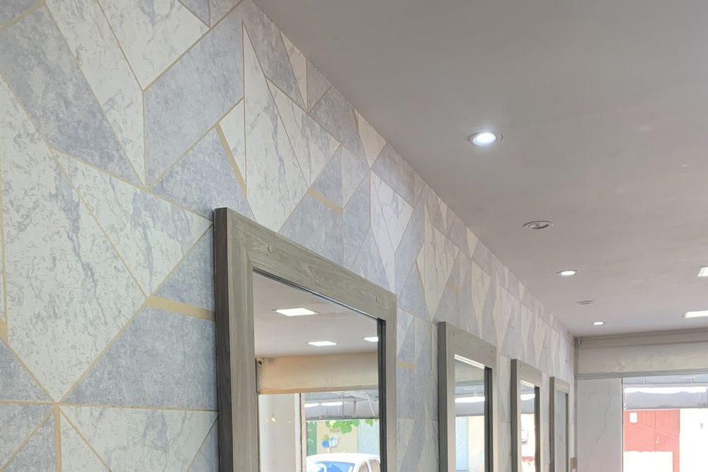

Início · Serviços · Cabelo
Cabelo: corte, cor e alinhamento.
Corte, luzes e mechas, californianas, coloração, progressiva e tratamento capilar de reconstrução/alinhamento: os serviços de cabelo que o salão divulga. Informação geral do ofício para ler antes; o que combina com o seu cabelo, a profissional conversa com você no horário.
Corte
Um corte faz toda diferença
“Um corte faz toda diferença no movimento do cabelo, traz leveza e aumenta ainda mais a beleza do rosto 🥰”Instagram @magnifiquesalvador · ver o perfil
O corte começa por uma conversa: como você usa o cabelo no dia a dia, se costuma secar ou deixar ao natural, o comprimento que quer manter. Leve uma foto de inspiração, se tiver — ajuda a chegar à mesma ideia.
Curto, médio ou longo, com camadas ou reto: o desenho é combinado antes da tesoura.

Cor
Luzes, mechas e californianas
Luzes e mechas clareiam fios escolhidos; nas californianas, o claro aparece mais nas pontas, com a raiz mais escura. A coloração muda ou renova a cor do cabelo inteiro.
Luzes e mechas
Fios clareados em pontos escolhidos, para dar luz e movimento.
Californianas
Clareamento concentrado no comprimento e nas pontas, com a raiz mais natural.
Coloração
Cor aplicada no cabelo inteiro ou só na raiz, para renovar ou mudar o tom.
Antes de marcar
Conte o que já foi feito no cabelo (química, alisamento, tinta); isso orienta o serviço.
“[…] Venha conhecer e ficar ainda mais magnífica com as cores do verão ✨💖”Instagram @magnifiquesalvador · ver o perfil
Em serviços com química, é comum a profissional avaliar o fio e, quando for o caso, fazer um teste antes. Confirme com a equipe na hora de marcar.
Alinhamento
Progressiva
A progressiva é um alisamento que reduz o volume e o frizz e deixa os fios mais alinhados. O resultado e a duração variam com o tipo de cabelo e com a química que ele já recebeu.
“Venha agendar sua progressiva e sair com o cabelo hidratado e bem alinhado para este outubro que promete 💕”Instagram @magnifiquesalvador · ver o perfil
- Antes: conte se há tinta, luzes ou outro alisamento no cabelo.
- No salão: pergunte qual produto será usado e como é a aplicação.
- Depois: siga as orientações de lavagem que a profissional passar.
Tratamento
Tratamento capilar de reconstrução/alinhamento
Nas legendas, o salão mostra um tratamento capilar para “brilho e cabelo alinhado”. Esse tipo de tratamento costuma combinar reconstrução dos fios e redução do frizz, sem o objetivo de alisar como a progressiva.
Qual tratamento faz sentido para o seu cabelo — e se ele pode vir antes ou depois de uma cor — a profissional explica no horário.
Produtos, tempo de serviço e intervalo entre as aplicações variam. A recepção informa na hora de marcar.
Entre um horário e outro
Cuidados em casa
- Use os produtos indicados para o cabelo com química (cor, luzes ou alinhamento).
- Proteja os fios do calor de secador e chapinha, com protetor térmico.
- Sol e piscina pedem cuidado redobrado com o cabelo clareado.
- Combine a manutenção — retoque de raiz, corte das pontas — antes de sair do salão.
Dúvidas frequentes
Perguntas comuns
Preciso levar foto de inspiração?
Não é obrigatório, mas ajuda a combinar o corte ou a cor que você imagina.
Posso fazer cor e progressiva no mesmo dia?
Depende do cabelo e dos produtos. A profissional avalia e explica em que ordem fazer; confirme com a equipe na hora de marcar.
Quanto tempo leva uma luzes ou californianas?
Varia com o comprimento, o volume e a técnica. A recepção informa a duração ao marcar.
Vocês fazem tratamento capilar?
Sim, o salão divulga tratamento capilar de reconstrução/alinhamento. Confirme os detalhes com a equipe.
Agende
Um horário marcado, do jeito que você sonhou.
R. Guaraçaima, 14A, Piatã. A recepção combina dia e horário pelo WhatsApp (71) 3286-5206, de segunda a sábado.